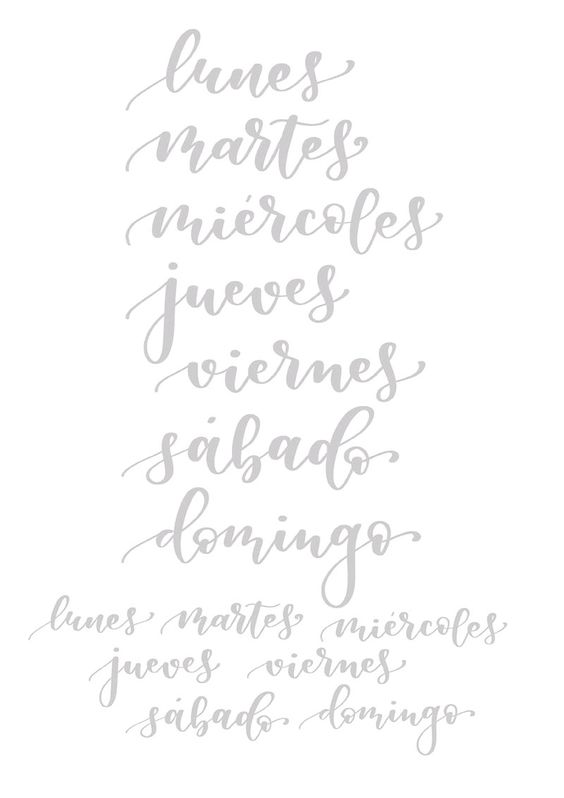
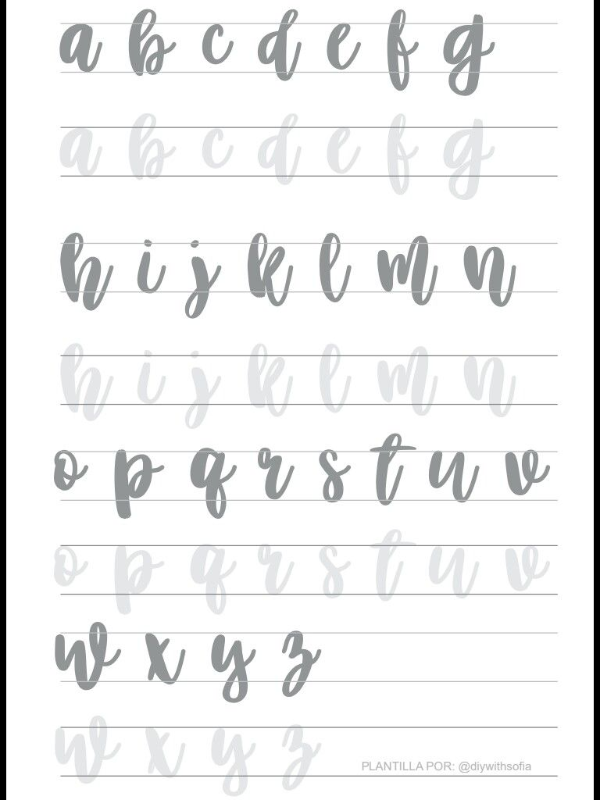
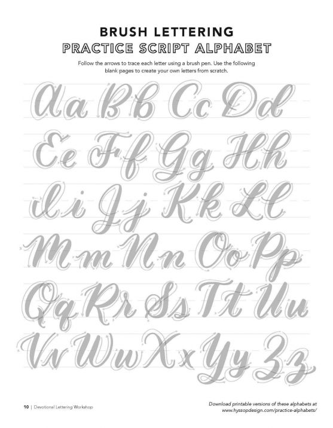
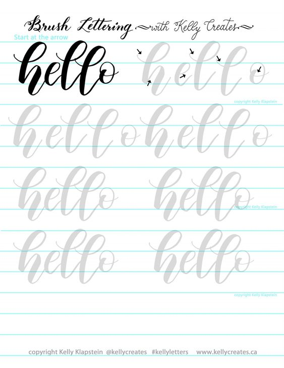
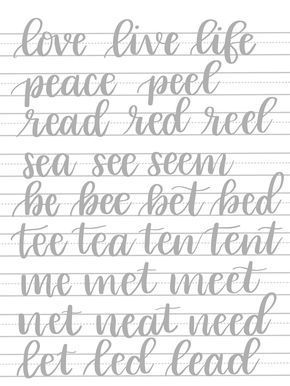

Aqui les dejo unas plantillas. Yo les recomiendo estas plantillas, para que practiquen, y les salga más fáciles, ya que al principio controlar el plumón o los trazos son muy díficiles, pero con pratica todo se pódra, ya verás.
Solo es cuestión que descargues la que más te guste y ahora a practicar.
|  |  |  |  |  |